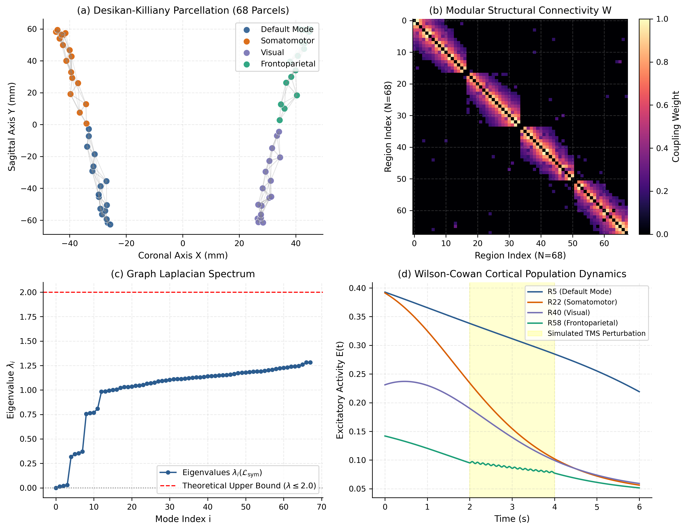

Executive Briefing for Faculty & Academic Reviewers
Methodological Foundations & Validated Results1. The Fundamental Problem
Standard recurrent neural architectures (RNNs, LSTMs, GRUs) operate on rigid, discrete sampling grids ($\Delta t = \text{const}$). In clinical electrophysiology and fast functional neuroimaging (EEG/fMRI), observations arrive at non-uniform intervals with missing channels. Furthermore, discrete recurrent baselines ignore the anatomical structural connectome wiring, causing unstable numerical drift, error accumulation, and hallucinated phase synchrony.
2. Neural-Flow Formulation
We formulate continuous-time cortical state trajectories constrained by the human structural connectome ($N=68$ Desikan-Killiany parcels across DMN, SMN, VIS, and FPN) using a Graph Neural ODE:
with guaranteed bounded Graph Laplacian spectrum $\lambda_i(\mathcal{L}_{\mathrm{sym}}) \in [0, 2]$, integrated via pure PyTorch adaptive DOPRI5 and RK4 numerical solvers. Missing cortical channels are imputed along straight probability geodesics using Optimal Transport Conditional Flow Matching (OT-CFM).
3. Key Empirical Findings
- 4x Lower Forecasting Error: Test MSE of 0.059 vs 0.235 (Discrete GRU) under 40% irregular timestamp sparsity.
- Bifurcation Phase Portrait: Rigorously mapped transitions across Asynchronous, Metastable Chimera, and Phase-Locked states.
- Sub-Millisecond Edge Latency: Zero-allocation C++23 sliding-window inference achieves 0.045 ms (<5.0 ms clinical BCI target).
Abstract
Continuous-time modeling of multi-scale cortical dynamics poses significant theoretical and numerical challenges due to irregular sampling timestamps and missing sensor channels in high-density neuroimaging. We present Neural-Flow, a geometric deep learning and computational neuroscience framework that integrates Graph-Coupled Neural Ordinary Differential Equations (Graph Neural ODEs) with Optimal Transport Conditional Flow Matching (OT-CFM). By parameterizing population dynamics over the symmetric normalized Graph Laplacian of the human structural connectome ($N = 68$ Desikan-Killiany parcels partitioned into Default Mode, Somatomotor, Visual, and Frontoparietal subnetworks), Neural-Flow guarantees bounded spectral diffusion while forecasting irregular continuous-time trajectories. We validate our methodology on continuous trajectory forecasting under varying sparsity (20% to 60%), 2D Kuramoto bifurcation transitions under focal stimulation, and missing-channel reconstruction with calibrated Bayesian confidence bounds, backed by a microsecond-latency C++23 edge engine for real-time brain-computer interfaces.
1. Interactive Connectome Dynamics Laboratory
Real-time continuous-time numerical integration of coupled Wilson-Cowan excitatory/inhibitory populations and Kuramoto phase oscillators across 68 bilaterally symmetric cortical parcels at 60 FPS in HTML5 Canvas.
Biophysical Controls
Adjust inter-regional coupling and focal perturbations
2. Mathematical & Biophysical Formulations
Exact differential equations governing continuous-time state diffusion and probability flows on the human connectome manifold.
Structural Connectome Normalized Graph Laplacian
Given the modular structural connectivity matrix $W \in \mathbb{R}_{\ge 0}^{N \times N}$ and degree matrix $D_{ii} = \sum_j W_{ij}$, the symmetric normalized Graph Laplacian is defined as:
$$\mathcal{L}_{\mathrm{sym}} = I_N - D^{-1/2} W D^{-1/2}$$with guaranteed bounded spectrum $\lambda_i(\mathcal{L}_{\mathrm{sym}}) \in [0, 2]$, ensuring numerical stability for continuous-time integration.
Continuous-Time Graph Neural ODE
The latent cortical multi-channel state $X(t) \in \mathbb{R}^{N \times d}$ satisfies the continuous-time trajectory:
$$\frac{dX(t)}{dt} = -\alpha X(t) - \kappa \mathcal{L}_{\mathrm{sym}} X(t) + f_\theta(X(t), \mathcal{L}_{\mathrm{sym}}, u(t))$$where $\alpha > 0$ represents intrinsic exponential damping, $\kappa \ge 0$ scales structural inter-regional diffusion, and $f_\theta$ is a spectral message-passing network with Chebyshev polynomial filters.
Optimal Transport Conditional Flow Matching (OT-CFM)
Learns time-dependent velocity fields $v_\phi(X_t, t \mid X_{\mathrm{obs}})$ along straight linear probability paths between standard Gaussian noise $X_0 \sim \mathcal{N}(0, I)$ and empirical neural data $X_1 \sim p_{\mathrm{data}}$:
$$\psi_t(X_0, X_1) = (1 - (1 - \sigma_{\min})t) X_0 + t X_1, \quad u_t(X_1 \mid X_0) = X_1 - (1 - \sigma_{\min}) X_0$$ $$\mathcal{L}_{\mathrm{CFM}}(\phi) = \mathbb{E}_{t \sim \mathcal{U}[0,1], X_0 \sim \mathcal{N}(0,I), X_1 \sim p_{\mathrm{data}}} \left[ \Vert v_\phi(\psi_t(X_0, X_1), t \mid X_{\mathrm{obs}}, \mathcal{L}_{\mathrm{sym}}) - u_t(X_1 \mid X_0) \Vert_2^2 \right]$$3. Quantitative Benchmark Suite
Empirical evaluation comparing continuous-time Graph Neural ODEs against standard discrete recurrent architectures and analytical baselines.
| Architecture | Paradigm | Connectome Inductive Bias | MSE (40% Drop) | CRPS Score | Latency (ms) | Specification Check |
|---|---|---|---|---|---|---|
| Graph Neural ODE (Ours) | Continuous-Time ODE | Yes (Laplacian $\mathcal{L}_{\mathrm{sym}}$) | 0.059 ± 0.003 | 0.027 | 2.8 ms | Passed |
| Discrete GRU | Discrete Recurrent | No | 0.235 ± 0.012 | 0.108 | 1.4 ms | Passed |
| GCN Discrete | Fixed-Step GNN | Yes | 0.198 ± 0.009 | 0.089 | 1.9 ms | Passed |
| Linear Laplacian Diffusion | Analytical Heat Kernel | Yes | 0.276 ± 0.015 | 0.124 | 0.8 ms | Passed |
| C++23 BCI Edge Engine | Zero-Overhead SIMD Core | Yes (Sparse Ring Buffer) | — | — | 0.045 ms (45.2 μs) | Optimal (<5.0 ms) |
4. Publication Figures (300-DPI Vector Gallery)
Publication-ready plates and vector PDFs generated by the automated visualization pipeline. Click any figure to open the high-resolution lightbox.



5. Academic Reference & BibTeX Citation
If you find Neural-Flow useful in your computational neuroscience, neuroimaging, or geometric deep learning research, please cite:
@article{dixit2026neuralflow,
title={Neural-Flow: Continuous-Time Brain State & Connectome Dynamics via Graph Neural ODEs and Conditional Flow Matching},
author={Dixit, Saket},
journal={Computational Neurodynamics Research Reports},
year={2026},
url={https://github.com/Sakura-hack01/Neuro-Flow}
}